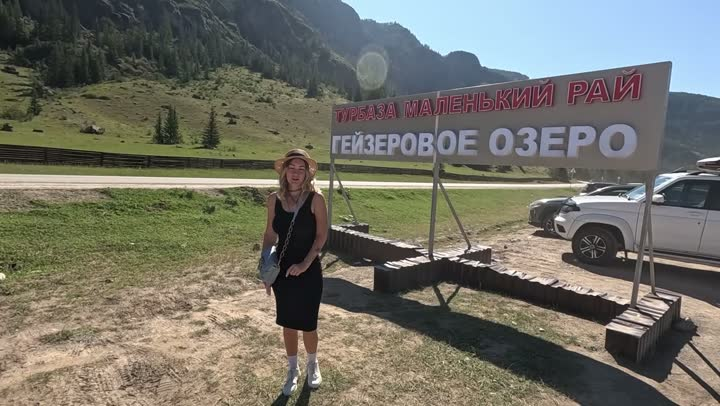

Атлас мест · Акташ, Россия
Село Акташ

Наш отзыв
Акташ — небольшое алтайское село, знаменитое близостью к Гейзерному озеру. Мы прогулялись по деревянным мосткам над болотом до озера, полюбовались живописными видами Курайского хребта и заглянули в тематический парк со скульптурами сказочных персонажей. За вход заплатили всего 150 рублей с человека. Приятно удивило, что инфраструктура заметно улучшилась за последние годы — теперь гулять удобнее и безопаснее.
Последний раз были здесь: 6 ноября 2026
Цены на 2024 год — на момент съёмки
- Вход на территорию около Гейзерного озера — 150 руб./чел.
Совет: Надевайте удобную обувь для прогулок по природной зоне.
Где это
50.321396,87.6157055
Смотреть в наших роликах
Мы на АЛТАЙ! Акташ ,Гейзерное озеро, Марсовые горы и другие красоты Алтая. часть 3
6 сентября 2024 · место с 11:31 · все места ролика
КУДА НАС ЗАНЕСЛО? 🤔НЕВЕРОЯТНЫЕ МЕСТА, ГЕЙЗЕРОВО ОЗЕРО И ПУТЕШЕСТВИЕ НА АВТОДОМЕ! | АЛТАЙ МЕСТО СИЛЫ
6 ноября 2026 · место с 0:00 · все места ролика
Рядом из нашего атласа
- Красные ворота (Krasnye Vorota, Altai Republic) — 4,9 км
- Гейзерное озеро — 5,1 км
- Чёрное озеро (Чибикель, Чейбеккёль) (Chernoye Ozero (Chibikel), Altai Republic) — 8,8 км
- Марсовые поля (Кызыл-Чин) — 56,6 км
- Слияние Чуи и Катуни — 67,4 км
- База отдыха — 84,6 км
Атлас мест канала «Юля и Дима / БЕЗ ТОРМОЗОВ». Описания составлены по нашим роликам; цены — на момент съёмки. Нашли неточность — напишите нам в Telegram.